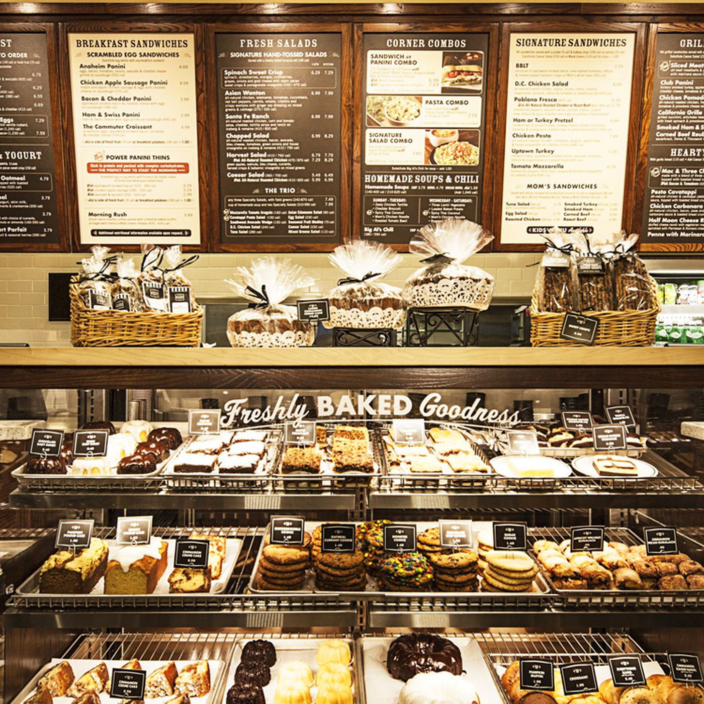

About Us
Inspired by great fresh ingredients, our small neighborhood bakery on a corner in downtown Chicago began creating artisan breads and freshly baked sweets. And upon success, neighbors began to ask us for sandwiches made with that fabulous bread, followed by homemade soups and salads, and even made-to-order scramblers. Our guests’ requests continued to inspire us as our bakery’s menu and business grew.
Today, we continue to fulfill the needs and desires of our neighbors with a menu of ingredient-inspired, prepared-to-order food. When you visit our cafe, you’ll see real kitchens in place of assembly lines. You’ll hear the chopping of over 40 types of fresh herbs, fruits and vegetables, and the sizzle of our real panini grill. You’ll see the stove’s open flame and feel the warmth from our ovens working all day long. They’re the traditions we established years ago that we still passionately follow today.